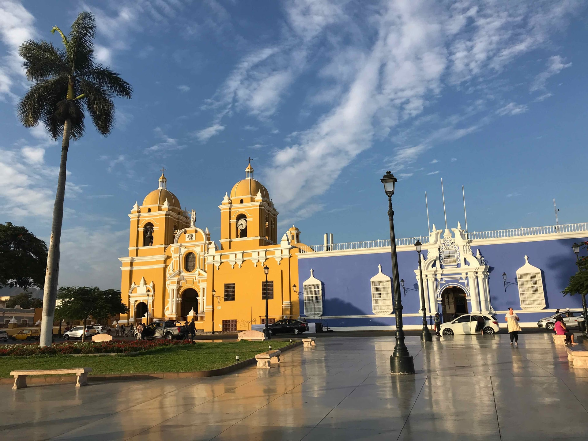
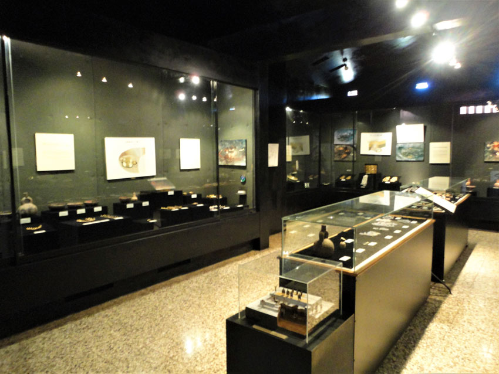
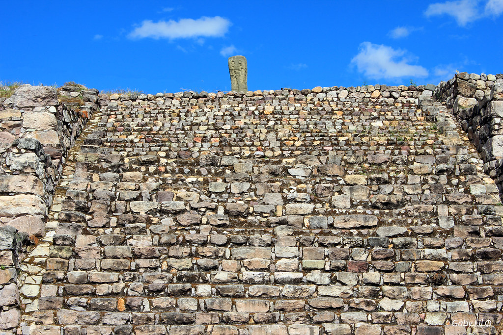
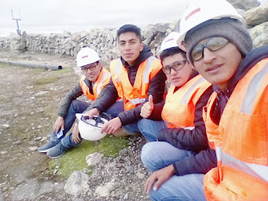

LUGARES VISITADOS
Ciudad de Trujillo
Visité la ciudad de Trujillo en Noviembre del año 2013, junto a mis compañeros de promoción
del Colegio "San Ramón". Es una ciudad moderna y a la vez llena de historia: un ejemplo de ello
son los Caballitos de Totora que abundan en Huanchaco, su balneario más emblemático; con ellos se
practica hasta hoy la pesca artesanal. En esta ciudad tuve le placer de conocer la Huaca del sol y la luna
el complejo arqueológico el brujo, la ciudadela de Chan Chan, laguna de Conache, Huanchaco y Pacasmayo.

Provincia de San Pablo
Visité la Provincia de San Pablo en el año 2012, en un viaje de estudios del Colegio. En estilopersonal
lugar pude visitar su plaza de armas, el sitio arqueológico Kuntur Wasi, su museo y el complejo arqueológico
Layzón.


Minera Yanacocha
Visité la Minera Yanacocha en el año 2018, por medio de una visita técnica, gestionada por
un grupo de ex-estudiantes de la facultad de Ingeniería de Sistemas de la UNC. El yacimiento de
Yanacocha es una mina aurífera peruana considerada la más grande de América del Sur y la segunda
a nivel mundial. Se ubica entre los distritos de Cajamarca, La Encañada y Baños del Inca y en menor
medida en el distrito de Tumbadén en el departamento de Cajamarca.
